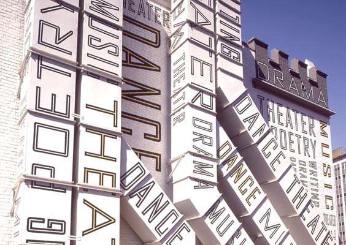

The Work
After graduation Scher moved to New York to take her first job as a layout artist for Random House's Children's book division, designing layout for children's books and ignoring her mother's advice against taking the position and moving away.
CBS & Atlantic

In 1972 Scher began working for CBS records in the advertising and promotion department but she wasn't able to do what she really wanted, which was album artwork so she moved to Atlantic Records to take the role of Art Director where she was able to work with both album artwork and promotional material. In this position Scher worked closely with illustrators and artists to create art for musicians. She stayed in this role for two years to gain experience before subsequently moving back to CBS Records in 1974 when she was offered the position of East Coast Art Director in the Cover department. During her time at CBS Scher oversaw over 125 album covers a year and earned four Grammy nominations. At CBS, Scher started experimenting heavily with Art Nouveau and constructivist typography because the she couldn't afford to keep putting all of the studio's budget into imagery. She didn't know it at the time, but this experimentation would make her one of the most notable names in the post-modernism movement.
“She preferred to invoke a mood or stage, a mysterious scenario, than provide literal depictions of bands and performers.”
- Ellen Lupton, Curator at Cooper-Hewitt National Design Museum
Scher worked with multiple prominent names, including the cover for Boston's 6m selling debut record and creating the typographic "Best of Jazz" series posters. Scher says that the musicians preferred to work closely with her in the art department as it felt "less corporate". These artists had to sign off on all of her work, which taught Paula the importance of presentation.
Koppel & Scher, Pentagram and Teaching
In 1982 after eight years working at CBS Paula decided to move on and explore graphic design on her own. After two years working for herself, Scher established Koppel & Scher with fellow graduate Terry Koppel. The firm created advertising and packaging, corporate identities and book covers. It was here that Scher also designed the iconic Swatch posters, borrowing heavily from Herbert Matter's work from over fifty years before. The promotional book "Great Beginnings" created by the firm features the first two paragraphs from famous novels reimagined in the design style popular at the time in which they were written.
Unfortunately, the recession hit and many design firms were forced to shut their doors, Koppel & Scher among them. Koppel moved to Esquire Magazine as the Creative Director and left Scher to run the firm for herself. After a year alone,Scher joined the iconic London design firm Pentagram in 1991 at their New York office. She is still there today.
During her time at Pentagram Scher held the position of partner in the New York office, eventually becoming the first female to be elevated to the position of principal. At Pentagram, Paula has worked with many prominent businesses and counts Microsoft, The New York Philharmonic and the country of Slovenia among her past clientele. She is perhaps best known for her promotional material for The Public Theatre.
In 1992, Scher was offered the opportunity to become an educator at the School of Visual Arts in New York. While teaching at SVA, Scher has also taught intermittently at Yale University, Cooper Union and her old school, Tyler School of Art. Scher has now taught at SVA for over twenty years.
The Public Theatre
In 1994, Paula was asked to create some fliers and marketing material for the New York Shakespeare Festival run by the Public Theatre and was hired on a freelance basis. The director at the time had been trying to rejuvenate the public image of the theatre, people held the impression that it was boring and mainly for old people and the promotional material created before Paula's time had been typical of most created at the time. Paula wanted to break the mould. Starting with that promotional material, Paula worked with the Public Theatre for sixteen years, creating a cohesive brand identity for them. Her work was simple and typographic in nature, without silly revisions and often felt percussive, matching the musical subject matter. George C Wolfe, the director at the time wanted individual promotional posters for each play, usually around six per season. At the time this was unheard of so Paula created a framework that each poster could be fit into and quickly populated. They were designed to be instantly recognisable from a distance and as a result are visually striking. By 1998 the work was so heavily emulated that Paula decided that it was time to stop using that identity and style things a different way.
The brand identity that she created was used on all promotional materials, from clothing to the smallest flier and is a good example of the necessity of creating a cohesive brand identity. Interestingly, the logo that they settled on was something of an experiment, very out there at the time. This work for the Public Theatre would lead Paula down a road of working for and with musical institutions until today. Past clientele include The New York City Ballet, The Duke Theatre and Atlantic Theatre Company.
Environmental Graphics
In 2000 Paula was offered the opportunity of redesigning the New Jersey Performing Arts Centre, her first major foray into the world of environmental design. The exterior was painted white and covered in wonderful illustrative typography, immediately transforming what was once a boring and institutional rectory into something worthy of being called a performing arts centre. From here, Paula went on to design environmental features for Bloomberg, The Pave Charter School and the Atlantic Theatre Company among others.
The graphics themselves are often typographic in nature and often serve ulterior purposes beyond just being something pretty to look at. In the case of the Duke Theatre, graphics were designed with the actors in mind. Since they often look at the floor for cues and such, graphics span the floor and serve as a means of navigation as well as looking fantastic.
A particularly noteworthy example is the work that she did for the Queens Metropolitan High School in New York. Paula was initially contacted to create an art installation for the school, for this she decided to take one of her map pieces, a piece of New York, and modify it to fit on the walls of the foyer. The neighbourhood that the school resides in takes the central spot.
Alongside the larger projects, Scher has created graphics smaller in scope but with the same impact. The "did you remember where we parked the car?" graphic for the parking garage on East 54th Street in New York is quite cleverly designed and effective with a little bit of comedy thrown in for good measure. The rest of the garage was given the same typographic treatment and the result is great, taking something as mundane as a parking garage and turning it into something admirable.
Friends of the High Line
In 2000, Paula met a marketing director named Robert Hammond during a meeting at Pentagram. After the meeting Hammond said that he would like to talk to Paula about something else. Hammond was trying to stop the city tearing down the old industrial railway called "the High Line" and had formed a group called Friends of the High Line. In order to save the line, Hammond had the idea of turning it into a park but was in need of a brand identity.
Paula took the idea of a train track and ran with it, arriving at the idea of creating a stylised H out of the track and using that as a logo. At a benefit, Friends of the High Line were able to get several notable names to endorse the project, including the future mayor of New York, and the campaign was successful. Today the High Line is the most visited tourist attraction in New York. None of this would have been possible with Paula creating the identity and promotional material.
Maps

In the 1990s Paula began to paint elaborate typographic maps in a way only she could, full of bold colour and imagery, as respite from her design career. She created them while drawing from her fathers experiences creating maps for the USGS. She eventually created a huge map of the world in 1998 featuring as many place names as possible, no matter how large or small, and named it "The World's Population". This initial map would set Paula down a path of rendering everything from trade routes to tsunamis as one of her incredible maps. Some reach 12 feet high, an absolutely monumental undertaking. Scher says that her maps are "opinionated", "political" and "reflect how she feels about the world."
The beautiful thing about Paula's maps is that they are only sort-of right. Things are sometimes in the wrong place and misspelt, but that only adds to their charm. I was initially drawn to them because of the focus on type to render the map and I'm a sucker for anything typographic. I'm struggling to fully articulate just why I like them so much, but it's a mixture of the typographic nature and the sheer amount of chaotic information unapologetically thrown at the user.
In 2011, Scher published a collection of her maps along with sketches and notes in "Paula Scher: Maps" and while I've yet to pick up a copy, it's something that I've got on my shopping list.
Conclusions
Paula Scher is one of those names that I keep hearing mentioned in conversation but before researching this essay I didn't really know too much of her work. I had looked at some of her work for the Public Theatre but everything else was a mystery. Looking at what I've seen from her I can see now why people think so highly of her work, and why she has been the recipient of over 300 awards. I'm going to continue following her career with interest and when I see some of her work, I'll know just what it took to create. Her attention to detail and ability to break conventions is something that I've come to really admire, and I look forward to seeing what she does in future.